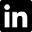
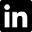

The Guinea Syndrome
A platform game in which a rabbit impersonates Mario, Chell (from Portal) and the Pyro (from Team Fortress)
The Global Scourge
The Global Scourge is an isometric real time strategy game. The goal is to protect cities from an alien scourge using a network of defensive towers.

Ocean's Keeper 2
Ocean's Keeper 2 is a 3D shoot'em up with a 2D gameplay.
This game has not been released yet.

The Return Of the Forgotten Legends
The Return Of the Forgotten Legend (ROFL) is a super smash bros.-like fighting game featuring heroes from League of Legends.
ROFL comes with a level and a character editor.
This game has not been released yet.

 
